Mobile Food Ordering App
Overview
User Research
Design
Usability Studies
The Street Vendor app is a food ordering app, perfect for large cities with rich street vendor communities. A convenient way to finding a street vendor.
Most food ordering apps lack the presence of street food vendors, there are no convenient ways to quickly locate local street vendors.
The Street Vendor App is here to streamline the process of locating a street food vendor, what typically occurs through word of mouth or sheer luck will now be at the tip of your fingers.
Research
Summary
Product and user research resulted in a competitive audit, its respective report, personas, and user pain points. Due to the research conducted on users and the competition, we realized that creating a mobile app would be the best solution for streamlining the process of locating street vendors in metropolitan areas.
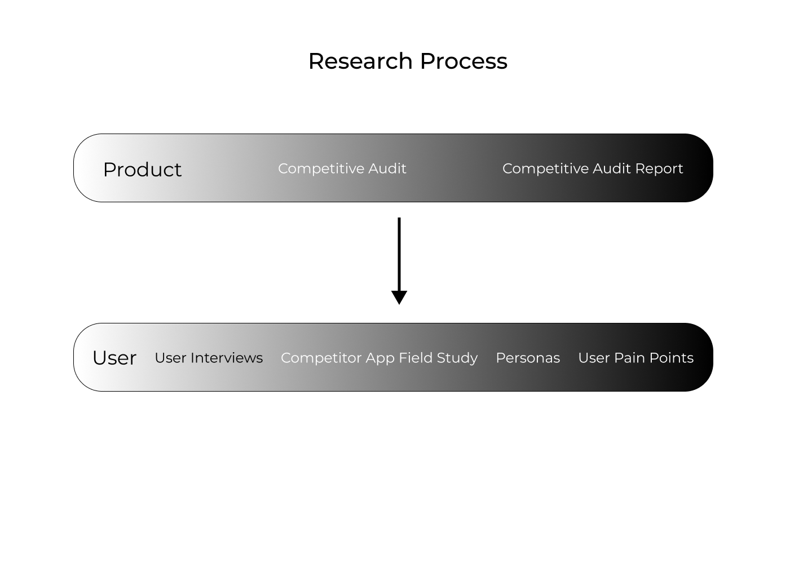Product
All of the information that was gathered during the product research is consolidated in the competitive audit and an analysis of it is presented in the competitive audit report.
The competitive audit further highlighted the existence of a market gap in the food ordering industry, with the gap being a lack of food ordering apps that provide their users with the option to order from local street vendors.
 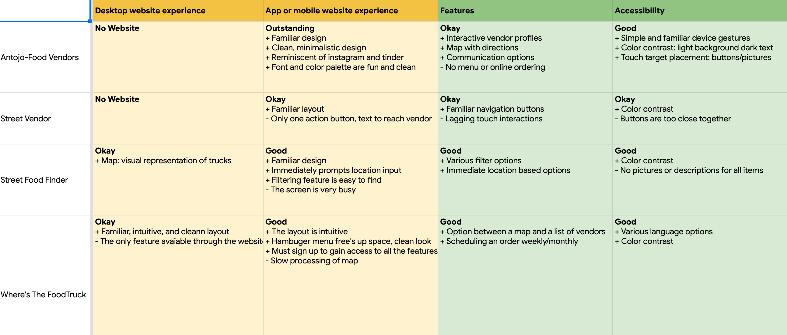
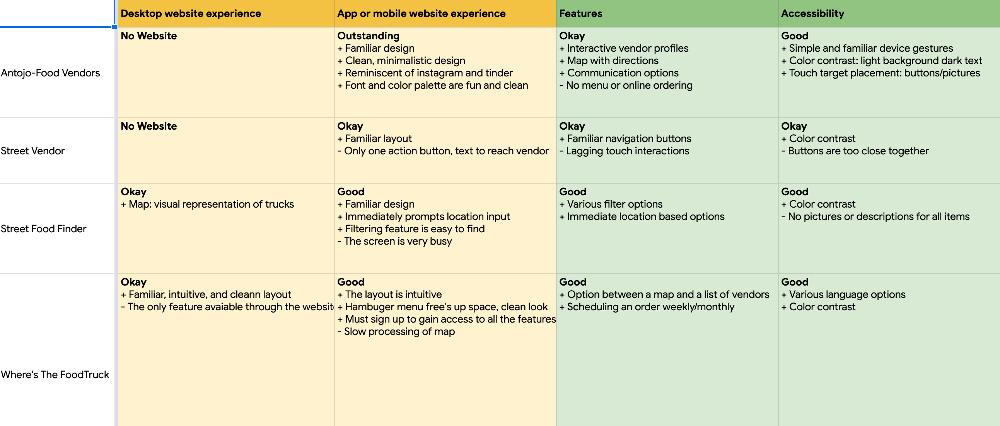
The goal of this report is to identify the strengths and weaknesses in food ordering apps in order to build a product that bridges the gaps present in the industry.
Direct: Antojo Food Vendors
Direct: Street Vendor
Direct: Street Food Finder
Indirect: Where's The Food
Can't place online orders.
Only serves as a directory.
Focus on food trucks.
Focus on gourmet food trucks.
1. Feature to place online orders.
2. Focus on street vendors.
3. Nationwide availability.
User
With the assistance of demographic data, the user research used interviews and a competitor app field study in the form of usability testing to compose the personas and user pain points.
The user research resulted in the observation of three key target user characteristics: they live in metropolitan areas, their age range is varied, and they come from varied socio-economic backgrounds.
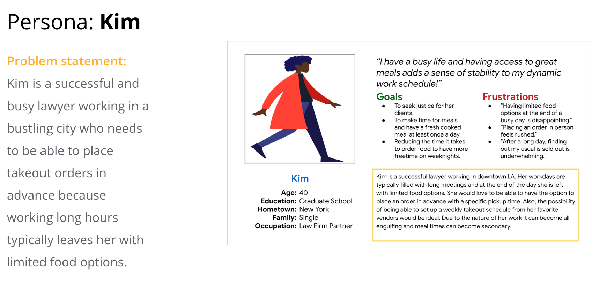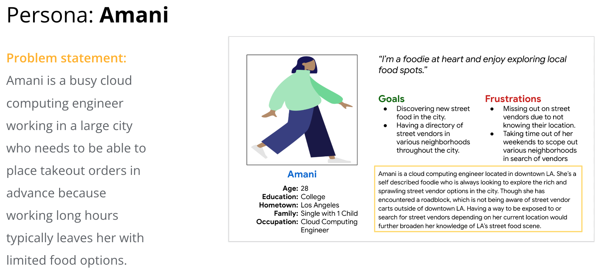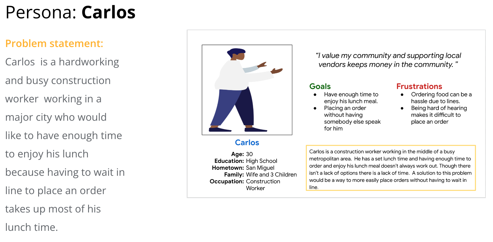Since the app is a concept, the user pain points were generated by conducting usability testing on competitor apps. By observing how users interacted with the competitors products, three pain points stood out: privacy concerns, features relating to vendor location, and account creation.
Lack of privacy.
No visual representation of vendor location.
Account needed to place order
Users mentioned feeling a lack of privacy, since upon using an app their location is shared without a need for consent.
Users mentioned that the apps lacked a visual representation of the distance between their current location and that of the vendors.
Users mentioned that having to create an account to use a service is an inconvenience and being able to use the app as a guest would be ideal.
Ideation
The ideation phase is composes of three exercises a storyboard, a user flow, and a user journey map. The user flow focuses on user navigation, the storyboard is a quick scenario of user interaction, and the journey map represents the expected user experience.
Storyboard
Lacking a tangible product, the storyboard below gives stakeholders a visual understanding of the apps purpose. The storyboard provides a clear understanding of how users may interact with the app.
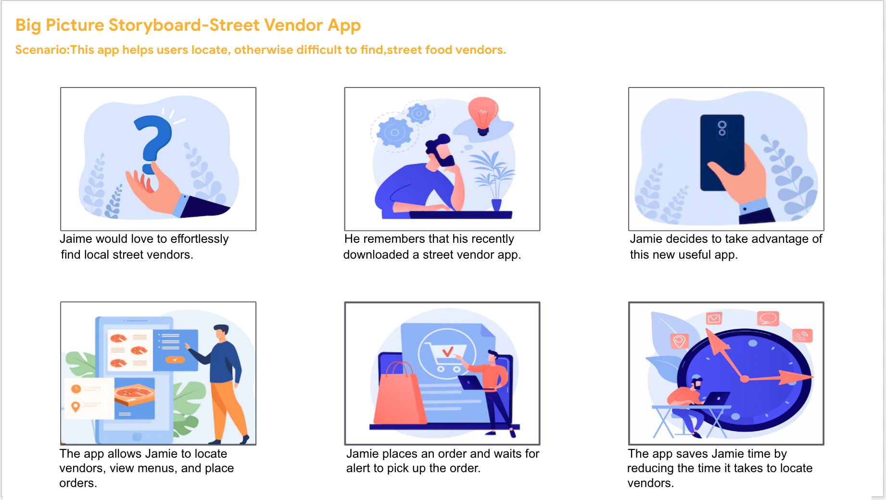User Flow
The user flow below follows the ideal path a user would take when navigating the app. Its design is loosely based on observations made on user interactions with competitor apps. In short, the user flow serves as an outline, early in the design process, with an intuitive path for the user to follow.
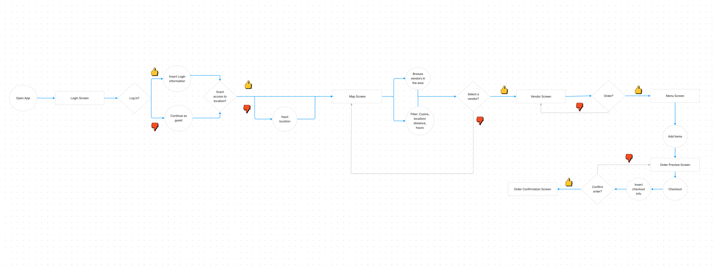User Journey Map
The future states journey map provides the design direction for a product that is not yet on the market. Since there is no tangible product the ideal user journey is portrayed below.
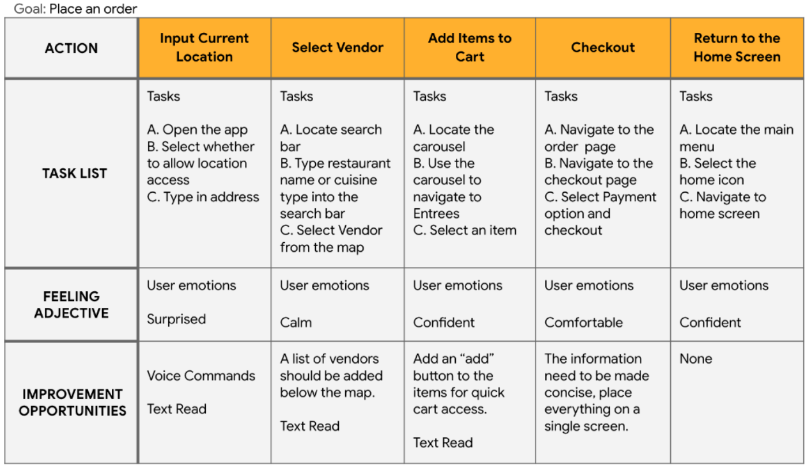Design & Evaluation
This section covers a significant portion of the case study, since it provides visual examples and design iterations of the product. It is composed of four major sections: the site map, wireframes, prototypes, and a usability study. At the end of the design and evaluation processes the outcome will be a functional user friendly design, though there is always room for improvement.
Site Map
The site map is a visual manifestation of the conceptual organization that is information architecture. Though it is a design starting point, it isn't a fixed entity. It will evolve through the design process based on user research.
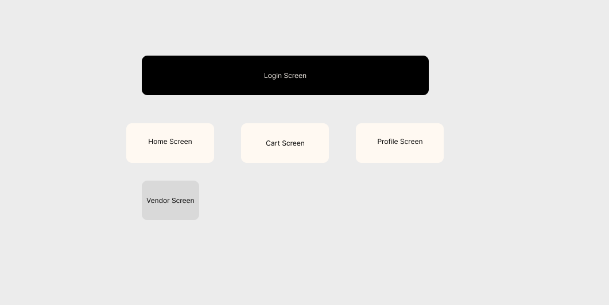Wireframes & Low Fidelity Prototype
The items in this section are a great example of iterating through a design. At the start are paper wireframes, which they serve as a form of brainstorming and get the design ball rolling. From this, a more refined version is developed with the design of a lo-fi digital wireframe resulting in a lo-fi prototype. This prototype will be tested resulting in further improvements to the design. Ultimately, the more issues this early on in the design process the better.
The aim of this wireframe is to address the three user pain points substantiated by the product and user research. Like the lack of privacy, the absence of a visual representation of vendor locations, and only being able to access apps if you have an account.
For instance, the issue with the lack of privacy is addressed on screen number 2, which gives users the option to accept or deny location access. Screen number 3 addresses the lack of visual representation of vendor locations by providing a map. Also, the login screen addresses the issue of only being able to place an order if you have an account by providing the option to login as a guest.
Usability Study
This section's focus is on testing and evaluating the design, it's a very iterative heavy phase. The result is a hi-fi prototype, as similar to a fully functioning product as possible.
The usability study's research goals focused on wether the app's design layout was intuitive and on the implementation of three visual design principles: emphasis, visual weight, and scale.
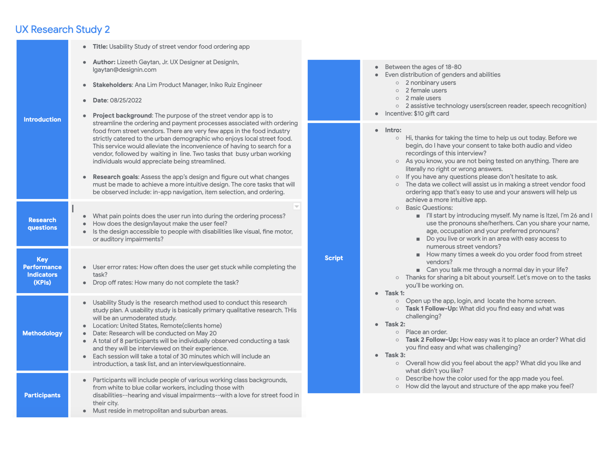While conducting the usability study, it's necessary to keep track of the users experience with the app as they move through the tasks and the usability notes do just that. Though the image below only illustrates the notes for one user, each users experience was observed and noted.

The affinity diagram below was used to organize the observations collected from the usability study and help develop insights. These insights are refined and result in iterations to the products design.
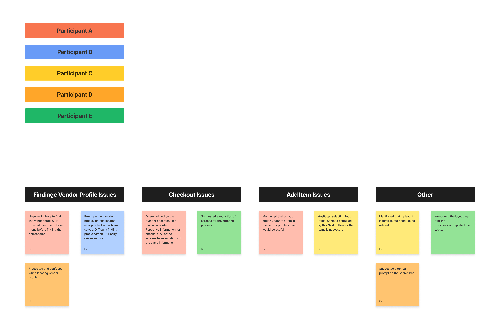Upon analyzing the information gathered from the user testing the 3 observations below were made.
Layout
Navigation
Elements: Action Button
Users mentioned the checkout process is inefficient.
Users struggled with finding the vendor screen.
Users struggled with adding items to their cart.
The first couple of images focused on the use of unnecessary checkout screens, to fix this issue two screens were consolidated into one(Section 1). Another issue involved difficulties navigating to the vendors screen from the home screen. In this case, a vendor list was added to the home screen which previously only had a map to choose vendors from(Section 2). The third observation centered user difficulties with the vendor screen items, resulting in adding an add button to the items to instantly places items in the cart(Section 3).
Conclusion
Final Product
Takeaways
The app provides people living in metropolitan areas a sense of community by supporting the local economy, while also providing access to fresh meals
The biggest takeaway while designing the app was the importance researching, brainstorming and iterating. I learned that ux design is a cycle through which designs are improved.
"The money I spend is staying in my community and I now know of multiple food vendors I can support in my area."
Next Steps
Continue conducting future user research.
Determine future areas of user needs
Continue iterating on the design until the desired accessibility degree, layout, and evolving business needs are met.